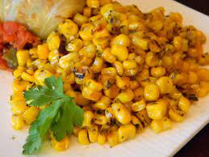

Glazed Carrots

Description
This is a delicious seasoned corn side dish. DELICIOUS. Must TRY NOW!!
Ingredients
- 1 ½ tablespoons butter
- 2 ½ cups whole kernel sweet corn
- 1 tablespoon Italian seasoning
- 1 pinch salt and ground black pepper
Steps
- Heat a skillet over high heat.
- Heat butter in hot skillet until almost completely melted; stir in corn.
- Season corn with Italian seasoning, salt, and black pepper.
- Cook seasoned corn until light golden brown, about 5 minutes.